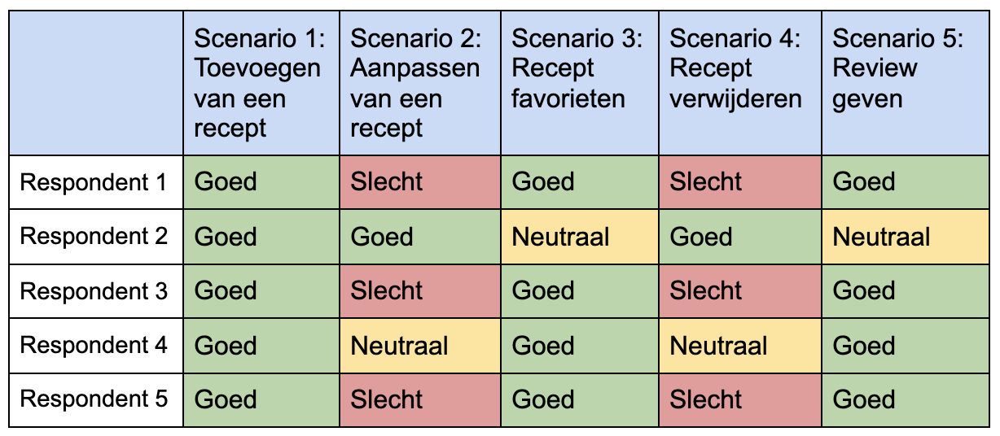
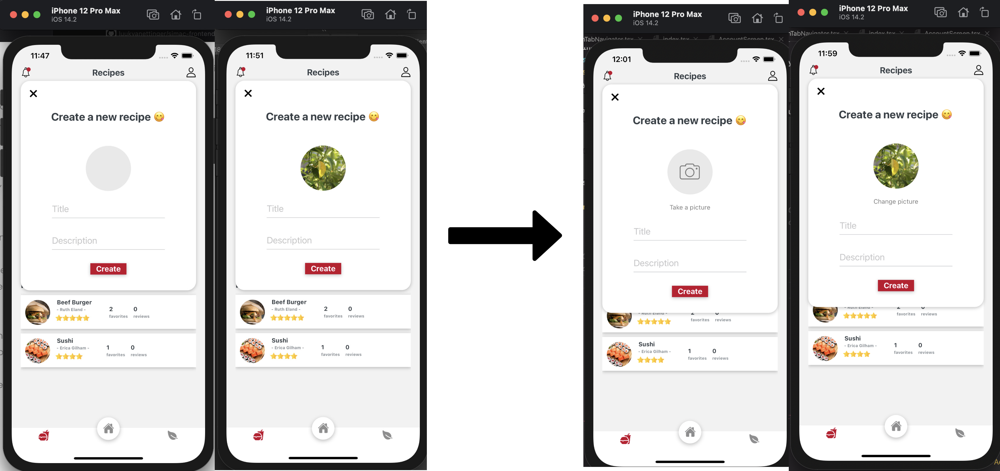
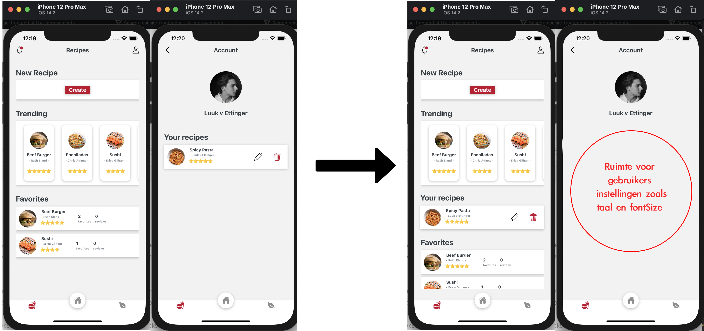
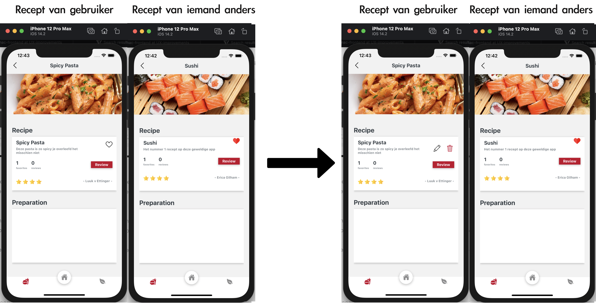
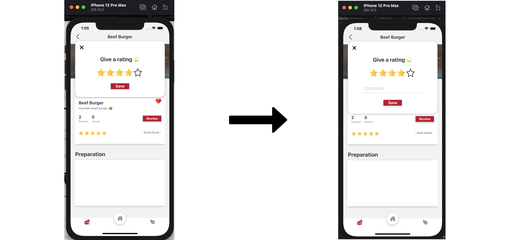
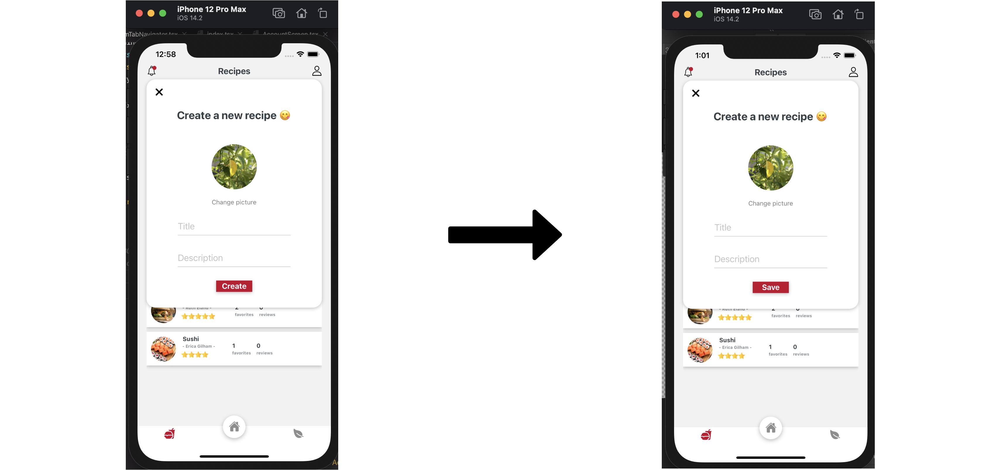

Simac App Usability Tests
Met het thuiswerken van de afgelopen tijd is er een risico dat de samenhorigheid tussen werknemers van Simac afneemt, met dit probleem is Simac naar ons toegekomen. Onze oplossing bestaat uit een concept met als middel een kook en chill app waarop de Simac werknemers hun recepten met elkaar kunnen delen. Het doel van deze usability test is het onderzoeken van de usability van de basis functionaliteiten van de Simac app en deze verbeteren indien nodig.
De onderzoeksvraag die bij de usability test hoort luidt dan ook als volgt: Zijn de core functionaliteiten van de Simac & Chill app zonder uitleg bruikbaar voor de doelgroep en waar liggen mogelijkheden voor een verbeterde gebruikerservaring?
Zijn de core functionaliteiten van de Simac & Chill app zonder uitleg bruikbaar voor de doelgroep en waar liggen mogelijkheden voor een verbeterde gebruikerservaring?
Het kook gedeelte van de Simac app heeft een aantal basisfunctionaliteiten waarvan ik de usability wil testen om de app gebruiksvriendelijk te maken. Ik wil door middel van fieldresearch de verschillende functionaliteiten testen door gebruikers verschillende scenario’s voor te leggen die zij moeten uitvoeren in een usability test.
De usability tests worden afgenomen door de respondenten op een mobieltje door de app te laten navigeren. Hierbij wordt het scherm opgenomen en daarnaast wordt met een laptop de audio opgenomen zodat de usability test terug geluisterd kan worden zodat de antwoorden nauwkeurig verwerkt kunnen worden.
In de usability test doorlopen de respondenten de volgende scenario’s:
- Maak een nieuw recept aan en gebruik de camera van het mobieltje om de foto van het recept te maken.
- Wijzig de naam van het zojuist aangemaakte recept
- Ga naar de detailpagina van je zojuist aangemaakte recept en voeg deze toe aan je favorieten recepten
- Verwijder je zojuist aangemaakte recept
- Geef het trending recept spicy pasta een review van 4 sterren
Bij het doorlopen van de scenario’s zal ik bijhorende vragen stellen aan de respondenten wanneer er onduidelijkheden zijn over het afnemen van de test. Op deze manier verzamel ik opmerkingen waaruit ik verbeteringen voor de UX kan verzamelen.
Resultaten:
Goed = De respondent heeft geen hulp nodig om de opdracht uit te voeren.
Neutraal = De respondent heeft een kleine hint nodig om de opdracht uit te voeren.
Slecht = De respondent lukt het niet zonder hulp de opdracht uit te voeren.
Er zijn in totaal 5 usabilitytests afgenomen met personen uit mijn omgeving die nog nooit eerder in aanraking zijn gekomen met de Simac app.
Hieronder is de resultaten matrix van de user tests te zien. Hierin is samengevat hoe de respondenten hebben gereageerd op de verschillende 5 scenario’s. Verder wordt hieronder per scenario/functionaliteit besproken hoe de respondenten het scenario hebben doorlopen en wat mogelijke verbeteringen zijn voor een verbeterde gebruikerservaring.

Scenario 1: Toevoegen van een recept
Alle respondenten hebben dit scenario goed doorlopen. Het was voor iedereen in een oogopslag duidelijk waar een recept aangemaakt kon worden. Echter is vanuit 3 verschillende respondenten aangegeven dat het grijze vakje voor de foto niet duidelijk is en dit verwarring kan brengen. De oplossing hiervoor is het toevoegen van een camera icon in het grijze vakje met een ‘take pic’ tekst eronder. Daarnaast vind een respondent het gebruik van het woord ‘save’ in plaats van create duidelijker bij het creëren van een recept nadat de gebruiker al op create heeft geklikt en de modal voor zich krijgt.
Scenario 2: Aanpassen van een recept
Alle respondenten op 1 na hebben dit scenario slecht of neutraal doorlopen. Het is niet duidelijk voor de gebruiker waar hun eigen recepten te vinden zijn. Daarnaast verwachten gebruikers op de detailpagina van hun recept hun aanpassingen te kunnen doen. De oplossing die uit meerdere respondenten naar voren kwam, is het laten zien van hun eigen recepten op de beginpagina en de mogelijkheid om hun eigen recepten op hun detailpagina’s te kunnen aanpassen.
Scenario 3: Recept favorieten
Alle respondenten hebben dit scenario goed doorlopen op 1 neutraal na, uit 2 verschillende respondenten kwam naar boven dat het liken van je eigen favorieten raar aanvoelt, aangezien je al een overzicht hebt voor eigen recepten. De oplossing hiervoor is het op eigen recepten detail pagina’s, in plaats van de like button, edit and delete buttons. Hiermee wordt het aanpassen van een recept probleem uit scenario 2 ook opgelost.
Scenario 4: Recept verwijderen
Het advies van scenario 2 geldt ook voor scenario 4.
Scenario 5: Review geven
Alle respondenten hebben dit scenario goed doorlopen op 1 neutraal na. Uit 1 van de respondenten kwam de vraag naar boven waarom hij geen comment kon plaatsen bij zijn review. Dit versterkt de connectiviteit van de app binnen een bedrijf en dit is het doel van ons hele concept. Een extra feature voor het commenten bij een review en dit aan andere gebruikers laten zien wordt om deze reden aangeraden.
{kind=link}
Uit de resultaten van de usability tests is te concluderen dat er nog een hoop design flaws aanwezig zijn in de Simac app waardoor de gebruikerservaring als negatief wordt ervaren. Uit de resultaten van de usability tests komen de volgende adviezen naar voren die geïmplementeerd moeten worden in de Simac app om gebruikers een betere gebruikerservaring te bieden.
- Het toevoegen van een camera icon met bijpassende ‘take pic’ tekst, op het grijze foto vakje bij het creëren van een recept.

- Het laten zien van “my recipes” op de beginpagina in plaats van op de account pagina

- De mogelijkheid om recepten te kunnen aanpassen op hun recepten detail pagina’s → door middel van een edit and delete button die op eigen recepten pagina’s aanwezig is in plaats van de favorite button.

- Feature voor de gebruiker om comments te kunnen achterlaten bij het maken van een review. Deze moet vervolgens aan andere gebruikers getoond worden.

- In de modal voor het aanmaken van een recept, verander de tekst ‘create’ naar ‘save’

Zoals in de afbeeldingen hierboven is te zien, zijn de adviezen van de usability test in de Simac app opgenomen.
{kind=link}
{kind=link}
{kind=link}
{kind=link}
{kind=link}
Luuk van Ettinger. (26-05-2021). usabilitytest resultaten. Geraadpleegd op 26 mei 2021, van
https://docs.google.com/document/d/12yG015-Ly-Yi4Lbx1FKHjDg_X3qX7FfLWWPUBKXG02s/edit?usp=sharing
Luuk van Ettinger. (26-05-2021). usabilitytest audio en scherm opnames. Geraadpleegd op 26 mei 2021, van
https://drive.google.com/drive/folders/1DJ0CsD9QNzBEAdV5jZ6gA-Yq8OSDFoUD?usp=sharing